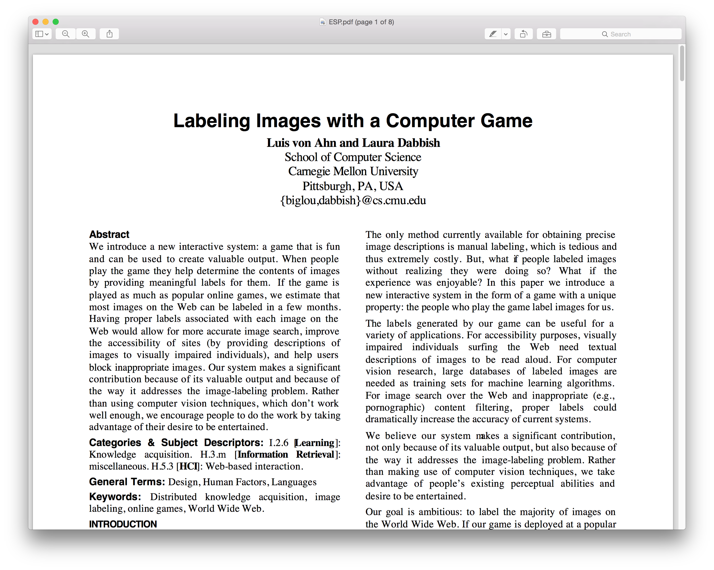

Through online games, people can collectively solve large-scale computational problems. Such games constitute a general mechanism for using brain power to solve open problems. People will play such games to be entertained, not to solve a problem - no matter the objective.
For the first time in human history, hundreds of millions of people can, via the Internet, easily collaborate on the same problem.
Amazon Mechanical Turk (MTurk) is a crowdsourcing Internet marketplace that enables individuals and businesses (known as Requesters) to coordinate the use of human intelligence to perform tasks that computers are currently unable to do.
Luis Von Ahn

The ESP Game
(acquired by Google)

In the first four months of its operation, the ESP Game generated more than a million labels for more than a quarter of a million images.
CAPTCHA
Completely Automated Public Turing Test To Tell Computers and Humans Apart
reCAPTCHA
The reCAPTCHA Project lies at the intersection of cyber security, technology, and the ongoing effort by several commercial and non-profit organizations to digitize printed information.
(acquired by Google)
Duolingo
Duolingo is a free language-learning platform that includes a language-learning app along with a crowdsourced text translation platform and a language proficiency assessment center.
WordTap
People play not because they are personally interested in solving an instance of a computational problem but because they wish to be entertained.